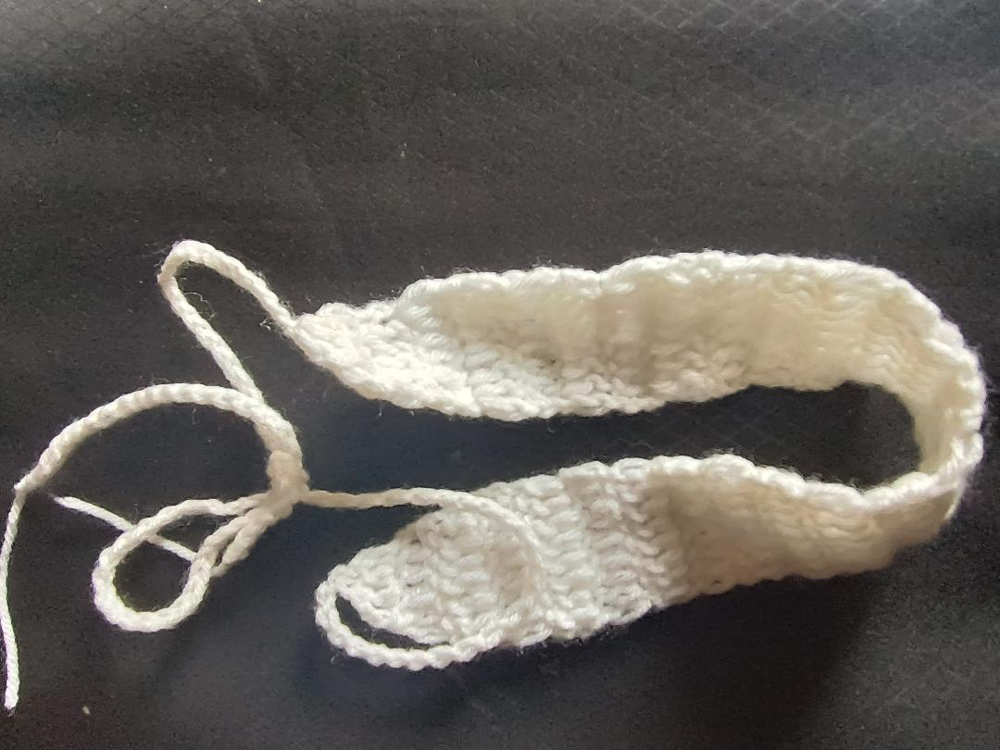

Small studio, smaller apartment, ever-growing stack of library books and yarn scraps. This is where the paintings, the crochet, and the marginalia end up.

1984 follows Winston Smith in the fictional totalitarian world of Oceania as he engages in acts against the Party (the government of Oceania) and faces the consequences. The world portrayed in 1984 is one of the most, if not the most, bleak and outright terrifying depictions of dystopian society ever to appear in literature. What sets this story apart from any other dystopian novels is that, unlike others in the genre that heavily rely on otherworldly or external threats to conjure fear, this novel, however, primarily focuses on the topic of power, freedom, and the essence of human relationships. The very notion of having a government that spies on not only your every move but even your thoughts, with the punishment no beig limited to a gruesome death or torture but to be driven out of the humanity of your individuality to the point of no return. While in other dystopian stories even the death of a character comes with some sense of grief and admiration, in this world death while a looming fear, is not the worst-case scenario; it is the eradication of any sense of humanity that the character has, not only becoming the empty shell o a person that he once was but also turning into the very monster he once pursued to destroy. The scariest part of this story is that all the things mentioned in the story while fictional could be reached in some sense in our world too in the right circumstances and that the relationships that we hold with our loved ones no matter how different we call it from the ones we see in the story with Julia, Winston and Obrien may be reduced to the same state if given the same dire conditions.
Animal Farm follows, in the most basic sense, the story of a group of farm animals who revolt against their human owner and establish a community of their own. Although a relatively short story, it has one of the most dynamic stories ever written, and I believe the most unique quality of this book is that the story and theme of this book evolve and expand as we grow up and as we learn more. To younger readers t, this would have seemed like a quirky story about a bunch of farm animals, but as we grow older and as we learn more. After learning more about how the book was inspired by the soviet russia and their treatment of the people, I was truly able to appreciate the story more. The human farmers who represented the tsar and Old Major who represented the original spirit of the revolution, pure,e carrying a dream of an equal society for the animals, nd how it was corrupted for the likes of Napoleon's benefits. How the hardworking and the foundation of the farm, like those of Boxer(which represented the working class of the Soviet who built the foundation for the country), were used and disregarded, and in the end how the farm/society meant to free the animals became yet another cage just with different ringmasters. I think this book make sus see the disparity faced by the people, how,w unlike most stories, real life most often, if not always, a privileged, cunning, selfish few gain while the hgoo hardworking people go unappreciated and are often disregarded after they no longer can benefit the one in power. I think the beauty of this specific book lies not only in the various ways one can perceive it but also in how the story, in all its absurdity, shows a real picture one faced by many before us and one that will surely be faced by manyafter It shows the corruption of a pure dream: how a dream made to free the people was twisted into something that eventually became something that yet again trapped the people rather than set them free.
To Kill a Mockingbird follows the story of a pair of siblings, Jem, the older brother, and Scout, the younger sister, as they grow up in Maycomb County with their father, Atticus. One thing that particularly stood out to me in the story was how the story's plot pivoted from more easily digestible topics to particularly heavy ones as the kids grew up. The first part is about Jem and Scout when they were young, focusing mainly on their infatuation with Boo Radley, which reflects a simpler plot and a more black-and-white, naive view of the world for Jem and Scout. So naturally, as a reader, I had expected the story to follow the path it had laid out with Boo and his dynamics with the two kids. Still, the second part of the story took a sharp turn while the language and style of writing remained mostly the same. There was a shift in how the kids perceived the world of Maycomb County. The storyline about Tom Robinson exposed the kids to the unfairness of the world they lived in. I believe this shift was fully realized and acknowledged in the story when Calpurnia began to refer to Jem as "Mister Jem," showing that the kids have finally begun to understand the world they live in. For me, the main beauty of this story lies in how seamlessly Harper Lee was able to weave in the themes of perception of others, racism, and classism while still being able to develop it in such a way that the world of Maycomb County moves at the same pace for the readers as it is for Jem and Scout. This unique way of explaining heavy topics, introducing complex characters and hard-hitting subjects in a way that is even for young children, this ability to balance is exactly why I consider this a classic.
Less a productivity book than an argument against productivity books. Made me feel better about my to-do list by convincing me to mostly ignore it.
I'm Sambriddhi — a full time high school student who loves books painting and everything crochet
When I'm not painting, I'm usually crocheting something — small keryrings or projects which i usually give awya to my friends. And I read constantly, keeping a running log of what's landed so I remember it a year later.